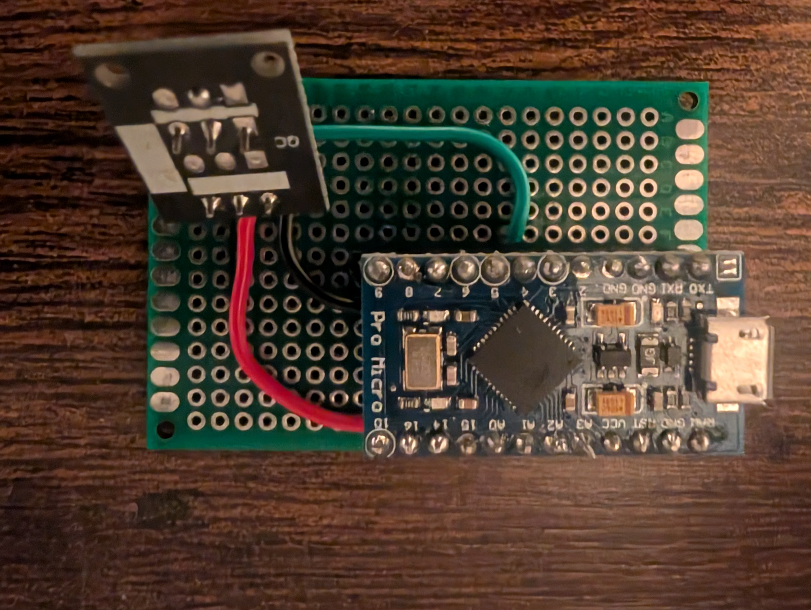

Map keys from an IR remote to keyboard keys and media controls.

The IR receiver uses an Arduino Micro and a KY-022 IR sensor. This can recieve input from any standard IR remote. It then maps this to keyboard keys. Once mapped, the Arduino Micro acts as a USB device, without requireing the mapping software. The mapping software generates custom C++ code and uploads it to the device using the Arduino CLI.

The software was coded in Python. It uses PyQt6 for the UI. It communicates with the Arduino to display the IR remote codes. It supports up to eight remote key mappings, each of which can be mapped with up to four computer actions. Future updates would be to add mouse movement mapping.